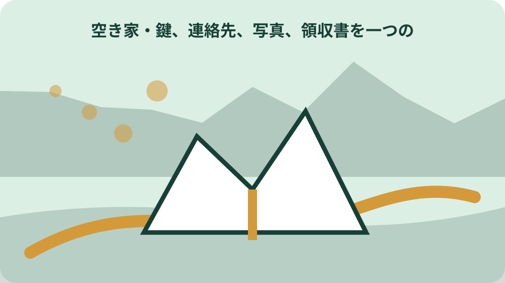
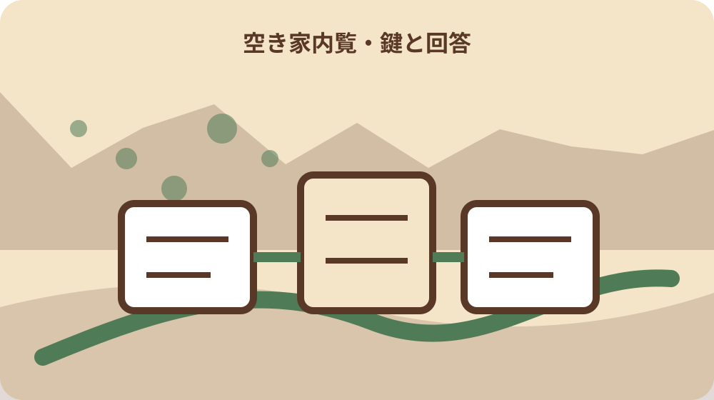

先に結論を確認する
この記事の答え：登録番号、内覧日時、立会人、危険箇所、見せる設備、残置物、立入り禁止、未確認質問を一枚にした内覧表です。町への申込書とは別に、鍵の受渡しから退出確認までを記録してください。
森町で最初に照合する条件：町から利用希望者情報を受けた段階と直接の日時調整を分ける
内覧日より先に説明範囲を一枚へ固定する
森町の空き家・空き地バンクで見学希望者の連絡を受けた所有者は、すぐに日時だけ決めるのではなく、物件番号、連絡を受けた日、希望日時、立会人、開ける場所、見せない場所、危険箇所を一枚へまとめます。内覧の案内と売買条件の交渉を同じ場で始めないことが出発点です。
この記事の答えは、公開情報、現地で見せる設備、残置物、未確認事項を別欄にし、鍵の受渡しから退出確認までを時系列で残すことです。森町の登録票を写すだけでなく、内覧当日に説明できる状態と、専門確認へ渡す状態を分けます。
森町の案内では、利用希望者の情報が所有者へ伝えられた後、見学、交渉、契約は希望者と所有者双方で行います。町が内覧の進行役や契約当事者になるわけではないため、所有者側の立会い表が必要です。
内覧表の先頭には、住所、地番、登録番号、売却か賃貸か、町から届いた利用希望者情報、連絡窓口を書きます。電話番号などの個人情報は必要な立会人だけで共有し、公開用の物件資料へ混ぜません。
完了条件は、建物の良し悪しを一日で決めることではありません。見せた場所、説明した事実、見せられなかった場所、後日回答する質問が分かり、次の担当へ安全に渡せることです。さらに、当日の返答と資料確認後の返答を色分けし、内覧者がどこまで確定情報として受け取ったかを後から確かめられるようにします。
町への利用申込みと所有者の内覧準備を分ける
森町の物件公開ページは、見学や交渉を希望する人に利用申込書と同意書を定住推進課へ提出するよう案内しています。所有者は、町から利用希望者の情報を受け取った段階と、直接日時を調整する段階を混同しません。
町の案内にない人から突然連絡が来た場合は、空き家バンク経由の見学として受け付け済みかを定住推進課へ確認します。申込済みだと決めつけて鍵の場所や室内写真を送らず、登録番号と氏名を照合します。
所有者側は、町への登録申込書、同意書、チェックリストを提出し、町の現地調査と審査を経て登録されます。内覧前の一枚には、登録日、公開ページの更新確認日、登録内容の変更有無も書きます。
登録時から雨漏りや残置物の状態が変わった場合は、古い公開情報のまま案内しません。変更内容を町へ伝える必要があるか確認し、内覧者には確認日付きの現況として説明します。
町への提出書類と、所有者が当日使う内覧表は目的が違います。前者は制度利用の申込み、後者は安全な見学と回答履歴の管理です。原本を持ち歩かず、当日に必要な項目だけを写した控えを使います。登録内容の控えには作成日を付け、公開ページの記載と現況が異なる場所を余白へ追記します。
外から門塀・屋根・立木の危険を先に見る
内覧者が到着する前に、道路側から門、塀、擁壁、屋根、外壁、雨樋、窓、立木、足元を確認します。建物へ入る前の経路に落下物、段差、ぬかるみ、蜂、倒木のおそれがあれば、案内範囲を狭めます。
危険箇所は赤い印だけで終えず、写真番号、撮影方向、近づかない距離、代わりに見られる位置を書きます。内覧者へ確認させるために危険な場所へ誘導せず、専門業者が必要な箇所は見学対象から外します。
森町のチェックリストには、外壁の亀裂や剥落、躯体・基礎の補修の必要、害獣被害、敷地内の清掃・除草などが含まれます。所有者の外観確認も同じ単位に分けると、曖昧な『古い家です』という説明を避けられます。
写真は内覧直前の日付で撮り、以前の登録写真と分けます。登録時にはなかった破損を見つけたら、現在写真を優先し、いつから変わったか分からない場合は未確認と記します。
現地確認者は屋根へ上がらず、床下へ潜らず、電気設備を分解しません。外から見えない安全性を所有者の目視だけで保証せず、内覧中の立入り停止条件を明確にします。雨天や強風で外観確認が難しい日は、予定を優先して危険を増やさず、見られなかった方角を未確認として再訪候補へ送ります。
水道・排水・電気を使える範囲で説明する
森町のチェックリストは、上水道、地下水、簡易水道、共同水道など水の種類と、下水道、浄化槽、くみ取りなど排水の状態を分けています。内覧表にも設備名、停止中か、最後に確認した日、負担金等の未確認事項を書きます。
『すぐ住める』という表現は、水道・電気・ガスを現在使えるか、契約を再開すれば使える見込みか、設備点検が必要かで意味が変わります。通電や通水をしていないなら、作動確認済みとは説明しません。
水栓を開ける場合は、元栓、凍結、漏水、排水先を事前に確認します。森町の確認票は、内見時に漏水が分かった場合に修繕対応するかも尋ねているため、所有者は当日返答できない場合の連絡先を決めます。
浄化槽のブロワ停止、くみ取り時期、井戸水の水質などは、見た目だけで利用可否を断定できません。設備名、契約先、点検記録の有無を伝え、必要な検査は別工程にします。
電気を入れたまま案内する場合も、分電盤、露出配線、延長コード、照明器具の異常を先に確認します。故障箇所を内覧者に試してもらわず、使わない設備には表示を付けます。設備一覧には型式、設置場所、作動確認日を記し、古い保証書があっても現在の作動を保証する資料とは分けて保管します。

雨漏り・床・傾きを事実と未確認へ分ける
森町のチェックリストは、過去の雨漏り、床の激しい傷みや白蟻被害、建物の傾き・腐食・不具合を確認項目にしています。所有者が知っている過去事実、現在見える跡、専門家未確認を三列に分けます。
天井の染みがある場合、雨漏りの原因と断定せず、発見時期、雨天後の変化、補修歴、現在の湿りを記録します。家具で隠さず、暗い場所は照明を用意して安全な位置から見せます。
床の沈みやきしみがある部屋は、入口で説明し、立入り人数を制限します。内覧者が荷重をかけて試すことを止め、構造上の評価は建築士等の調査へ渡します。
建具が閉まりにくい、柱が傾いて見える、基礎に亀裂があるという観察は、それぞれ写真と場所を残します。一つの現象から建物全体の原因を決めず、修繕見積りと状況調査を区別します。
国土交通省が案内する建物状況調査は、講習を修了した建築士が基準に基づいて行う調査です。所有者の内覧説明は調査結果の代わりではなく、調査を依頼するか判断する入口と位置づけます。既に報告書がある場合は実施日と対象範囲を示し、その後の台風や修繕による変化まで報告書が扱うと断定しません。
残置物を所有者物・確認待ち・対象外へ分ける
森町のチェックリストには残置物の有無が明記されています。内覧前に、家具、家電、寝具、仏壇、農具、灯油、薬品、書類を部屋別に撮り、処分予定、残す予定、家族確認待ちを分けます。
残置物がある状態を『片付けます』だけで済ませず、引渡しまでに撤去する物、契約条件として相談する物、持ち主が未確認の物を書きます。賃貸では設備として残す物と所有者私物を分けます。
重要書類、写真、位牌、現金、権利証類は内覧前に安全な場所へ移します。収納を見せる必要がある場合も、個人情報が入った箱を開けたままにしません。
灯油、農薬、塗料、ガス容器、古い消火器などは、通常の家財と同じ袋へまとめません。品名、容器状態、保管場所を記録し、回収先や処分方法を町や専門業者へ確認します。
内覧後の写真には、移動した物と元の場所を残します。見学中に私物がなくなったという疑いを防ぐため、立会人は入室前後に部屋番号と残置物の状態を確認します。撤去見積りを取る場合も、内覧者の購入希望とは別に、所有者側の家族確認と処分区分を終えてから対象品を確定します。
鍵と立入り範囲を時刻で管理する
内覧当日の鍵は、保管者、受渡時刻、使用した鍵、開けた扉、返却時刻を記録します。玄関鍵だけでなく、門、物置、勝手口、車庫の鍵を混ぜず、対象外の鍵は持ち出しません。
所有者が立ち会えず現地協力者へ任せる場合は、案内範囲、説明できる項目、質問の持帰り、緊急連絡先を書面で渡します。価格や修繕負担をその場で決める権限まで渡したと誤解されないようにします。
内覧は到着、外観説明、室内、設備、退出確認の順にします。複数組を同時に入れず、誰がどの部屋にいるか把握できる人数に絞ります。
立入り禁止場所は、口頭だけでなく扉前の表示と平面図で示します。床が弱い部屋、屋根裏、床下、崩れた物置、蜂の活動場所などは、鍵が開いても入らない範囲です。
退出時は窓、蛇口、照明、分電盤、換気、施錠を順に確認します。内覧前後のメーター値や通電状態を記録すれば、後日の漏水や電気使用を確認しやすくなります。最後に立会人二人で玄関の施錠を確認し、一人だけの記憶に頼らない退出記録にします。
境界・接道・農地を現地説明だけで決めない
内覧者から境界や接道を尋ねられても、現地の塀、側溝、植木だけで確定しません。登記資料、公図等、測量成果、道路管理者の情報を分け、所有者が確認できていない線は未確認と答えます。
森町のチェックリストも、接道、土地と建物の所有者、共有、登記、隣地境界を別々に確認しています。建物の室内状態が良くても、土地関係の確認が不要になるわけではありません。
宅地に隣接する畑や山林を一緒に見せる場合は、バンク登録対象、地番、地目、所有者を一筆ずつ確認します。住宅の付属地だと思い込まず、農地の権利移転等は所管窓口へ相談します。
車の進入可否は、道路幅だけでなく、曲がり角、橋、勾配、門幅、他人地の通行を確認します。内覧日に通れたことを恒久的な通行権の証明にしません。
現地で即答できない質問は、境界、道路、農地、上下水道、建物の五分類へ入れ、確認先と回答期限を決めます。推測で埋めるより、未確認欄を残す方が次の調査を正確にします。回答には参照した図面名と確認日を添え、古い資料を現在の確定条件として流用しません。
町・宅建業者・所有者の役割を混ぜない
森町の案内は、町が交渉や契約を行わないことを明記しています。利用希望者の紹介後、誰が質問へ回答し、誰が条件を整理し、誰が契約書を作るかを決めます。
所有者と希望者の話合いで宅建業者へ仲介を依頼でき、その場合は仲介手数料が発生すると案内されています。依頼前に業務範囲と費用を確認し、内覧立会いだけで媒介契約が成立したと考えません。
町の登録や公開は、建物の品質保証や契約成立を意味しません。内覧表には、町の公開情報、所有者が説明した情報、専門家の資料を分けて綴じます。
建物状況調査を検討する場合は、調査者、対象範囲、実施日、報告書の扱いを確認します。内覧者の質問に合わせて所有者が検査結果を言い換えず、報告書の範囲をそのまま示します。
質問への回答担当を一人にまとめ、家族が別々の条件を伝えないようにします。回答を修正した場合は、変更日と理由を内覧履歴へ残します。町へ確認する質問、宅建業者へ確認する契約事項、建築士へ確認する建物事項を色分けすれば、担当違いの回答を防げます。

内覧後の質問・補修・再訪を別の列へ送る
内覧が終わったら、当日回答、資料確認後回答、専門家確認、所有者判断の四列に質問を振り分けます。『後で調べます』だけで終わらせず、確認先と回答予定日を書きます。
補修希望を受けた場合は、希望内容、原因調査の要否、見積り範囲、費用負担、実施時期を分けます。内覧中の会話を工事約束にせず、交渉記録へ移します。
再訪希望では、前回見られなかった場所、同伴者、必要時間、設備の作動確認を整理します。同じ説明を繰り返すだけでなく、前回の未確認事項を解消する目的を決めます。
複数の希望者がいる場合、各人の質問と個人情報を別ファイルにします。一人の希望価格や家族事情を別の希望者へ伝えません。
交渉へ進まない場合も、鍵、写真、質問票を閉じ、町への連絡要否を確認します。見学履歴は残しますが、不要になった個人情報は保管目的と期間を見直します。次の内覧へ改善点を引き継ぐ場合も、前の希望者の氏名や希望額を新しい案内資料へ転記しません。
大石の視点：見せる準備と売る判断を分ける
ここまでの登録手順、利用申込み、町が交渉・契約を行わないこと、チェック項目、建物状況調査の説明は公的資料で確認できる事実です。個別物件の安全性、境界、価格、契約条件は別に確認が必要です。
私、大石浩之は、内覧を受けることと、その日に売却条件を決めることを分けるのがよいと考えます。これは森町の指定手順ではなく、所有者と希望者が確認済み事項を共有するための実務提案です。
まず道路側の危険、鍵、設備、残置物を整え、境界や登記は資料へ戻ります。説明できない項目があること自体より、分からないのに断定することの方が後の負担を増やします。
売却か賃貸か迷っていても、内覧履歴は家の状態を家族で共有する記録になります。修繕、片付け、管理継続のどれを選ぶ場合も、誰が何を見たかが次の判断材料になります。
今日できることは、部屋番号入りの簡単な平面図を用意し、危険、設備、残置物、未確認の四つの印を付けることです。その一枚を町や宅建業者へ示し、次の確認順を決めます。
家族へ残す内覧一件ファイルを完成させる
一件ファイルの表紙には、登録番号、所在地、所有者・共有者、町担当、立会人、鍵保管者、内覧日時を書きます。次に外観図、室内平面図、設備表、残置物表、質問票を並べます。
写真名は日付、部屋番号、方角、対象を入れ、加工前の原本を残します。矢印を入れた説明画像は別名にして、雨漏り跡や亀裂の位置を後から照合できるようにします。
回答履歴には、質問、回答者、根拠資料、回答日、未確認の理由を書きます。口頭回答を確定情報として転記せず、資料を確認した後の修正も残します。
鍵の返却、施錠、電気、水道、忘れ物、破損の有無を退出欄で確認します。異常があれば当日の写真と連絡時刻を添え、次の内覧前に解消できたか点検します。
このファイルの完成条件は、契約成立ではありません。内覧で見せた範囲と残った課題が明確になり、所有者、家族、町、宅建業者が同じ事実から次の判断を始められることです。内覧日ごとに版番号を付け、設備確認や片付けが進んだ後も、前回何を説明したか追える状態にします。家族が担当を交代するときは、次回回答日と鍵保管者を声に出して照合し、引継ぎ済みの印を残します。